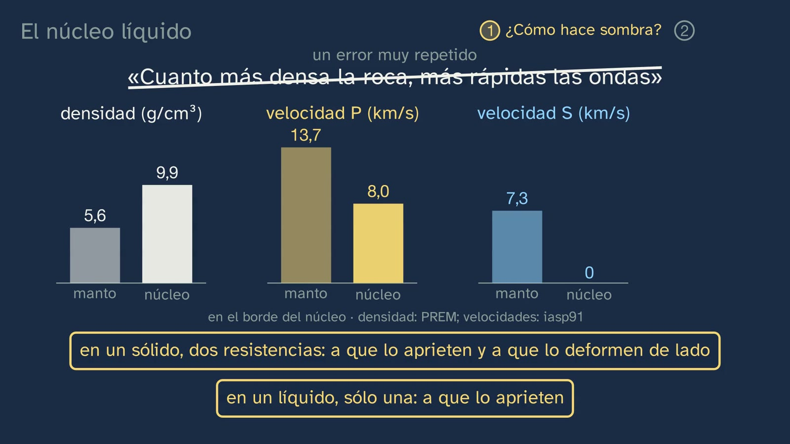
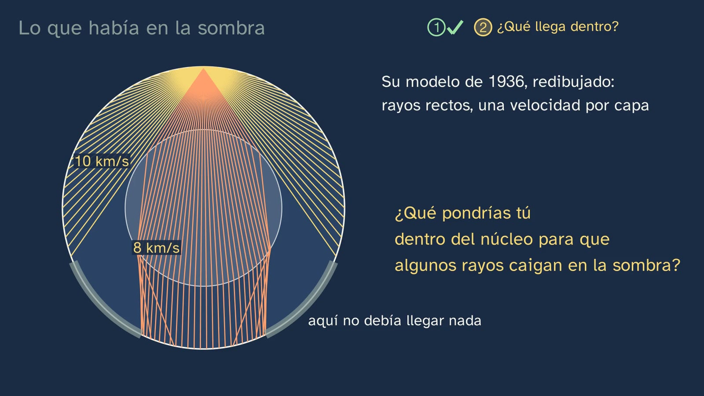
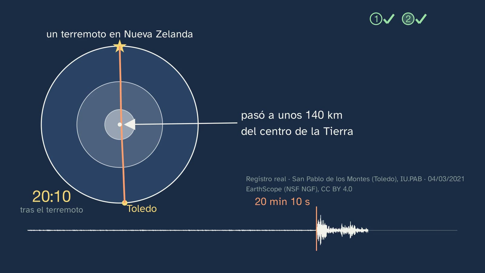

Lo que había en la sombra
En pocas palabras
Es la clase que resuelve los dos enigmas de la clase 3. En los sismogramas del terremoto de Fiyi de 2018, la onda P directa se apagaba hacia los 100° y dejaba un anillo de sombra hasta unos 140°; pero las ondas cruzaban el núcleo, y dentro de la sombra, desde unos 115°, llegaban algunas que no debían estar allí. La pregunta de la clase es doble: ¿cómo hace sombra algo que las ondas atraviesan, y qué eran esas ondas?
La respuesta empieza por una sola idea: una onda se tuerce cuando cambia de velocidad. La clase la enseña con un frente de onda calculado que frena primero por un lado, lee la ley de Snell sin cuentas y la lleva a casa con una cuchara en un vaso. Después la usa tres veces. Con Mohorovičić (1909–1910), una onda que da un rodeo por roca más rápida llega antes: es el Moho. En el manto, la roca cada vez más rápida curva los rayos, y una Tierra toda de manto no tendría sombra. En el núcleo, la P pasa de 13,7 a 8 km/s: los rayos que entran se tuercen hacia el centro, como en una lupa, y entre unos 100° y 140° no cae ninguno. La sombra nace sola de un cálculo con las velocidades medidas de la Tierra, donde el alumnado la vio en los datos, y la energía que falta se amontona pasados los 140°, donde en Fiyi llegaba unas ocho veces más fuerte. Siguen Oldham (1906) y Gutenberg (1912), y con ellos se cumple la promesa de la clase 2 (cómo se sabe que el núcleo ocupa un sexto del volumen); la sombra de la S y el núcleo líquido, con la prueba independiente de las mareas de la roca (Jeffreys, 1926); y el error «más denso, más rápido», desmontado con los datos del borde del núcleo, que es más denso y más lento a la vez.
La segunda mitad es de Inge Lehmann. Con el terremoto de Buller (Nueva Zelanda, 1929) y estaciones soviéticas dentro de la sombra, con un modelo de rayos rectos que eligió para hacer las cuentas a mano, propone en 1936 un núcleo interno más rápido que tuerce algunos rayos hacia fuera y los devuelve a la sombra. La clase lo comprueba con los datos: la curva que predice un modelo de 1991 pasa por las llegadas medidas de Fiyi, de 2018, y en Toledo, casi en las antípodas de Nueva Zelanda, la primera onda de un terremoto de allí ha cruzado el núcleo interno a unos 140 km del centro de la Tierra. Cierran su prudencia, lo que no dijo (que fuera sólido), su vida contada con lo que se esperaba de ella, lo que eligió y cómo la trataron, y una reflexión: cómo se conoce lo que nadie verá nunca.
Objetivo. Al terminar, el alumnado sabrá explicar con la refracción por qué hay zonas de sombra, qué dedujeron Oldham, Mohorovičić y Gutenberg de las ondas, y Jeffreys de las mareas, y cómo Inge Lehmann descubrió el núcleo interno.
Lo que esta ficha añade:
- los matices que la voz no dice: por qué la sombra del abanico no es la del libro, qué leyó de verdad Oldham, por qué no se nombra Irkutsk, lo que Lehmann no explicó del todo, el nivel de la ley de Snell y los nombres de las ondas (P′, PKP, PKIKP);
- los errores que conviene esperar;
- las soluciones de todo;
- una actividad de unos 20–25 minutos que no trae ningún libro: el modelo de Lehmann, con regla, compás y calculadora, en la que el alumnado rehace las tablas de su artículo de 1936, que está abierto, y comprueba sus números con los de ella;
- el montaje de la linterna y el vaso para el laboratorio, con su seguridad;
- recursos abiertos para seguir, entre ellos el artículo original de Lehmann, la página del resumen sismológico de 1929 donde Toledo anota el terremoto de Buller, y animaciones y visores en el navegador.
Las palabras. La clase dice perpendicular donde muchos libros dicen normal (3:24), y frontera donde el libro dice discontinuidad (lo une la voz en 5:09). La refracción es el cambio de dirección de una onda al cambiar de velocidad (2:52). Las fases son las llegadas de las ondas (16:50). Los nombres de las ondas, que la voz evita:
- P′ («P prima», el título de Lehmann) era en 1936 el nombre de las ondas P que cruzan el núcleo; hoy se llaman PKP (Lehmann, 1987, pie de la figura 3: «P′ (now PKP)»). En la notación de hoy, cada letra es un tramo del camino: P en el manto, K en el núcleo externo, I en el núcleo interno.
- La onda que Lehmann llamó P′₃ es la que hoy se llama PKIKP, la que atraviesa también el núcleo interno (Bolt, 1997, p. 295). Sus P′₁ y P′₂ son las dos ramas de la PKP.
- PKiKP es la que rebota en el borde del núcleo interno; Pdiff, la P que rodea el núcleo; PP, la que rebota una vez en la superficie (6:58); SKS, la S que cruza el núcleo convertida en P (9:01).
- Las dos llegadas de Mohorovičić se llaman hoy Pg (la que va por la corteza) y Pn (la que va por el techo del manto) (Departamento de Geofísica de la Universidad de Zagreb).
Currículo
Real Decreto 243/2022, Biología, Geología y Ciencias Ambientales, texto consolidado del BOE (copia del laboratorio, comprobada para la ficha del tema). Los minutos son los del vídeo.
| Elemento | Qué dice el decreto | Dónde se trabaja |
|---|---|---|
| Saber básico (bloque D, «La dinámica y composición terrestres») | «Estructura, composición y dinámica de la geosfera. Métodos de estudio directos e indirectos.» | El método sísmico explicado por dentro: la refracción (2:52 a 4:02), el Moho (4:36 a 5:09), el manto (5:47), la sombra del núcleo (6:25 a 8:23), el núcleo líquido (9:01 a 10:23) y el núcleo interno (11:28 a 13:45). Y otro método indirecto, las mareas de la roca (9:37) |
| Saber básico (bloque A, «Proyecto científico») | «Hipótesis, preguntas, problemas y conjeturas: planteamiento con perspectiva científica.» | Tres predicciones (4:36, 6:25 y 12:18); la hipótesis de Lehmann (12:57), su prudencia (14:27) y la predicción que se arriesga (16:50) |
| Saber básico (bloque A) | «La labor científica y las personas dedicadas a la ciencia: contribución a las ciencias biológicas, geológicas y ambientales e importancia social. El papel de la mujer en la ciencia.» | Inge Lehmann: el gancho (2:10, 2:19), su trabajo (11:50 a 12:57) y su vida (15:21 a 16:10) |
| Saber básico (bloque A) | «La evolución histórica del saber científico: la ciencia como labor colectiva, interdisciplinar y en continua construcción.» | La cadena Oldham, Mohorovičić, Gutenberg, Jeffreys y Lehmann (4:36 a 14:27); el sólido que propusieron otros y confirmaron las vibraciones de la Tierra (14:47); los rebotes vistos años después (16:50) |
| Competencia específica 1 | «Interpretar y transmitir información y datos científicos, argumentando sobre estos con precisión y utilizando diferentes formatos para analizar procesos, métodos, experimentos o resultados de las ciencias biológicas, geológicas y medioambientales.» | Rayos y frentes calculados (6:58), barras de densidad y velocidad (10:23), una curva sobre registros reales (13:26) y un registro con su reloj (13:45) |
| Competencia específica 2 | «Localizar y utilizar fuentes fiables, identificando, seleccionando y organizando información, evaluándola críticamente y contrastando su veracidad, para resolver preguntas planteadas relacionadas con las ciencias biológicas, geológicas y medioambientales de forma autónoma.» | Cada cita, con su obra y su página (2:19, 12:57, 14:27, 15:21, 16:50); en la actividad, el artículo original de 1936 |
| Competencia específica 3 | «Diseñar, planear y desarrollar proyectos de investigación siguiendo los pasos de las metodologías científicas […].» Su descripción pide «comprender en profundidad la diferencia entre una impresión u opinión y una evidencia». | Un modelo que se pone a prueba con datos que no conocía (13:26); lo que es hipótesis y lo que es prueba (14:27, 16:50) |
| Competencia específica 4 | «Buscar y utilizar estrategias en la resolución de problemas analizando críticamente las soluciones y respuestas halladas y reformulando el procedimiento si fuera necesario, para dar explicación a fenómenos relacionados con las ciencias biológicas, geológicas y medioambientales.» | Un modelo simplificado a propósito (12:18) y reformulado ante datos que no encajan (12:57) |
| Criterio 1.1 | «Analizar críticamente conceptos y procesos relacionados con los saberes de la materia, interpretando información en diferentes formatos (modelos, gráficos, tablas, diagramas, fórmulas, esquemas...).» | Leer la ley de Snell (3:24), el abanico (6:58), las barras (10:23), la curva (13:26) y el registro de Toledo (13:45) |
| Criterio 2.3 | «Argumentar sobre la contribución de la ciencia a la sociedad y la labor de las personas dedicadas a ella, destacando el papel de la mujer y entendiendo la investigación como una labor colectiva e interdisciplinar en constante evolución e influida por el contexto político y los recursos económicos.» | Lehmann (15:21, 16:10), con la pregunta «¿qué hace falta para que alguien pueda usar todas sus fuerzas?»; la red de estaciones de entreguerras (11:50) |
| Criterio 3.1 | «Plantear preguntas, realizar predicciones y formular hipótesis que puedan ser respondidas o contrastadas, utilizando métodos científicos y que intenten explicar fenómenos biológicos, geológicos o ambientales.» | Las apuestas de 4:36 y 6:25 y la hipótesis de 12:18 |
| Criterio 4.2 | «Analizar críticamente la solución a un problema sobre fenómenos biológicos, geológicos o ambientales y modificar los procedimientos utilizados o las conclusiones obtenidas si dicha solución no fuese viable o ante nuevos datos aportados o recabados con posterioridad.» | La difracción, descartada; el modelo de dos capas, cambiado por uno de tres (12:18, 12:57) |
La introducción de la materia, además, dice que «busca estimular la vocación científica en el alumnado, especialmente en las alumnas, para contribuir a acabar con el bajo número de mujeres en puestos de responsabilidad en investigación». La biografía de Lehmann (15:21, 16:10) va en esa línea, con datos y sin veredicto.
Lo que añade la actividad de esta ficha. El criterio 3.4, «Interpretar y analizar resultados obtenidos en un proyecto de investigación, utilizando, cuando sea necesario, herramientas matemáticas y tecnológicas, reconociendo su alcance y limitaciones…»: el alumnado calcula un modelo, encuentra su sombra y dice en qué se queda corto. El 4.1, «Resolver problemas o dar explicación a procesos biológicos, geológicos o ambientales, utilizando recursos variados como conocimientos propios, datos e información recabados, razonamiento lógico…». Y el 2.1, «localizando y citando fuentes adecuadas»: comprueba sus números con las tablas impresas de la autora.
Cómo está construida la clase
Capítulos del vídeo
Unos veinte minutos, en trece capítulos. Es una clase de teoría: Nil está en su mesa, sin bata. Sigue la pregunta del título en dos mitades, una por enigma, y cada mitad acaba en una prueba con datos reales. Nil sale a cámara cuatro veces: al saludar (0:00), con el gancho (2:10), a mitad (11:20) y al despedirse (19:28).
| Parte | Qué pasa | Por qué así |
|---|---|---|
| Qué vamos a ver (0:00) | El mapa del tema, con la cuarta clase resaltada (0:04). | Saber dónde se está. |
| Lo que ya sabes (0:17) | ¿Hasta dónde llegaba la P directa? Pausa. Hasta unos 100°; el anillo de sombra y los dos enigmas (0:33), que vuelven arriba como recorrido de la clase al acabar el gancho (2:51). | Recuperar justo lo que hoy se resuelve. |
| Las soluciones de la clase anterior (0:54) | Las tres, con su enunciado: unas 49 veces el pozo de Kola; unos 9 minutos a 60°; una estación sin P puede estar en la sombra: el abanico de la P, calculado, no pasa de unos 100°; y se comprueba, porque la P de un terremoto más cercano sí le llega y en su registro real (Kabul, a 119° de Fiyi) llegan otras ondas más tarde (0:54 a 1:41). | Cerrar lo pendiente sin alargarlo. |
| Un domingo en Copenhague (2:10) | Una chica de 15 o 16 años nota que el suelo se mueve; su padre: «Ha sido un terremoto». Se llamaba Inge Lehmann, y en 1936 descubrió algo que nadie ha visto nunca (2:19). | Un gancho con su contexto (cuándo, dónde y quién) y una persona antes que una teoría. |
| Por qué se tuerce una onda (2:52) | El frente que frena primero por un lado, como una fila cogida del brazo que pisa arena. La ley de Snell, leída en vivo (3:24). La cuchara en el vaso, para hacerlo en casa (4:02). | La única idea que hace falta, desde cero y con su porqué; la ecuación, leída y no calculada (ADR-099). |
| La carrera de Mohorovičić (4:36) | ¿Cómo llega antes una onda que da un rodeo? La carrera, con su reloj: lejos gana la que va por roca más rápida, como el coche que coge la autopista; el Moho, a unos 50 km (5:09). El manto, cada vez más rápido: rayos curvos; sin núcleo, no habría sombra (5:47). | La primera aplicación, la más cercana, y la Tierra sin sombra como contrafáctico. |
| Cómo hace sombra el núcleo (6:25) | La apuesta: A, B o C. El abanico calculado, con su frente: la sombra nace sola (6:58). La lupa: la energía que falta se amontona pasados los 140°, como en los datos de Fiyi (7:44). Oldham y Gutenberg, y el sexto del volumen de la clase 2 (8:23). | Predecir antes de ver; la prueba, un cálculo con las velocidades medidas. |
| El núcleo líquido (9:01) | Ninguna S lo cruza como S; su sombra, mucho mayor. Para y piensa (9:24). Es líquido, y las mareas de la roca lo confirman por otro camino (9:37). El error «más denso, más rápido», con los datos del borde (10:23). Nil, a mitad (11:20). | Dos pruebas independientes y el error, a la vista, desmontado con datos. |
| Lo que había en la sombra (11:28) | El segundo enigma. Buller, 1929: el globo gira de Nueva Zelanda a Eurasia y aparece el anillo de su sombra, con las estaciones soviéticas dentro (11:50). Su modelo de rayos rectos y la pregunta (12:18). Su hipótesis: un núcleo interno más rápido, con una lupa sobre él para ver cómo se tuercen los rayos (12:57). | La hipótesis la piensa antes el alumnado; después, la de ella, con sus palabras. |
| La prueba, en los datos (13:26) | La curva de un modelo de 1991 pasa por las llegadas medidas de Fiyi, de 2018. Toledo, casi en las antípodas: veinte minutos sin nada y la onda que cruzó el núcleo interno (13:45). | ¿Cómo lo sabemos?, con una predicción y con una estación española. |
| Quién era Inge Lehmann (14:27) | Su prudencia; quién la aceptó. Lo que no dijo (sólido), el tamaño de hoy, Plutón y las tres fronteras (14:47). Su vida (15:21) y cómo la trataron, con una pregunta (16:10). | El segundo error típico; la persona, con datos y sin veredicto. |
| Ver lo que nadie verá (16:50) | Ondas que no encajan, la hipótesis más sencilla, una predicción (rebotes en su borde) y su confirmación; su consejo para leer los registros. | Pensar lo que significa conocer algo que no se puede ver (ADR-099). |
| Para practicar y seguir pensando (17:36) | El resumen, con las tres Tierras hermanas; tres ejercicios (18:09); la pregunta abierta (18:54); la clase 5 (19:18); la despedida (19:28). | Las soluciones abren la clase 5. |



Puentes con otras materias. Física de 2.º: «Formación de imágenes en medios y objetos con distinto índice de refracción. Sistemas ópticos: lentes delgadas…» (bloque C), que es la ley de Snell con números y la lupa. Matemáticas I: «Cálculo de longitudes y medidas angulares: uso de la trigonometría» (bloque B), que es la actividad. Física y Química de 4.º de ESO: «La luz y el sonido como ondas que transfieren energía». Historia del Mundo Contemporáneo: la cooperación científica de entreguerras, con estaciones de Groenlandia, Europa y la Unión Soviética en un mismo artículo danés.
Lo que hay que traer
- De la ESO (Real Decreto 217/2022): la estructura básica de la geosfera (1.º a 3.º) y, en 4.º, que es de opción, sus métodos de estudio; la onda como idea («La luz y el sonido como ondas que transfieren energía», Física y Química de 4.º, también de opción). Por eso la clase explica la refracción desde cero (2:52).
- De la clase 2: el núcleo ocupa un sexto del volumen y guarda un tercio de la masa, con una densidad media de unos 11 g/cm³; es de hierro. Lo necesitan 8:23, 10:23 y el ejercicio 1.
- De la clase 3: las ondas P y S, que la S no atraviesa los líquidos, la sección de Fiyi, la sombra de unos 100° a 140° y las ondas que llegaban dentro, desde unos 115°; la estación de Toledo (San Pablo de los Montes).
- De Matemáticas, sólo para la actividad: el seno de un ángulo y la calculadora en grados. Las razones trigonométricas están en Matemáticas B de 4.º de ESO («Razones trigonométricas de un ángulo agudo y sus relaciones») y en Matemáticas I, que cursa todo el alumnado de la modalidad de Ciencias y Tecnología (artículo 11.1 del Real Decreto 243/2022). Si aún no se ha visto, la actividad tiene un camino con transportador.
La ley de Snell, ¿es de este curso? Con números, no: es de Física de 2.º. La clase la usa como se lee una ley (3:24): qué pasa con el ángulo si la segunda roca es más lenta, si es más rápida, si las dos van igual o si la onda llega de frente. Eso basta para entender la sombra, y es lo que piden los ejercicios. Las cuentas con senos quedan para la actividad, como ampliación.
Plan de una sesión de 50 minutos
Pensado para que el alumnado haga el modelo de Lehmann antes de ver cómo lo resolvió ella: el problema antes que la explicación.
| Minutos | Qué se hace |
|---|---|
| 0–2 | Sin vídeo, con la hoja: las preguntas de «Antes de ver el vídeo». La de la densidad la apunta cada cual: se recupera en el minuto (10:23). |
| 2–16 | Vídeo de (0:00) a (12:18) (si las soluciones de la clase 3 ya se corrigieron, se salta de (0:54) a (2:10)). En las pausas de (6:25) y (9:24), respuesta de palabra. Se para en la pregunta de (12:18): «¿Qué pondrías tú dentro del núcleo?». |
| 16–38 | La actividad «El modelo de Lehmann, con regla, compás y calculadora», en grupos (véase más abajo). |
| 38–47 | Vídeo de (12:57) a (16:50). ¿Coincide la hipótesis de los grupos con la de ella? En (16:10), la pregunta, en parejas, un minuto. |
| 47–50 | Vídeo de (17:36) al final. Los ejercicios y la pregunta abierta, para casa. |
Si hay poco tiempo, el vídeo entero en clase, con sus paradas (unos 23 minutos), y la actividad en otra sesión, como repaso antes de la clase 5. O sólo su primera parte (la sombra del modelo, 12 minutos).
Notas para el profesorado
Qué abanico se dibuja, y por qué su sombra no es la del libro. Los rayos de (6:58) están calculados con el modelo iasp91 (Kennett y Engdahl, 1991), que sale de miles de tiempos de llegada medidos, y comprobados con TauP (a la misma distancia, los tiempos difieren menos de una centésima de segundo). Pero para el primer enigma se dibuja sin el núcleo interno: hasta (11:28) la clase habla de un núcleo uniforme, y el núcleo interno es la respuesta del segundo enigma. Con el foco a 600 km, el de Fiyi:
- la P directa llega hasta 96,2° (98,4° con el foco en la superficie);
- sin núcleo interno, ningún rayo cae entre 96,2° y 142,9°;
- con el núcleo interno, la PKIKP vuelve a la sombra desde 112,8° (113,7° con el foco en la superficie): es el abanico «de hoy» de (12:57).
Los libros dan otras cifras: el USGS, de 104° a 140°; EarthScope, de 103° a 143°; Gutenberg (1913), sin P entre 108° y 140°. Salen de dibujos de rayos, con focos en la superficie y bordes que en los datos no son una raya. La voz redondea a «más o menos de los cien a los ciento cuarenta grados» (17:36), y está bien: no hay una cifra única. Es el mismo matiz de la clase 3.
La lupa, con sus números. El núcleo es una esfera donde la P va más despacio, como el vidrio de una lupa, y hace lo mismo: tuerce los rayos hacia dentro y los junta. Como no es una lente perfecta, no los junta en un punto sino en un anillo, que se llama cáustica: a 142,9° con el foco a 600 km y a 144,6° en la superficie (Houard y otros, 1993, la sitúan hacia 144,5°). Los rayos que salen del foco entre 10,2° y 10,8° de la vertical caen todos a menos de una décima de grado de 144,6°. En los datos de Fiyi, entre 143° y 151°, la fuerza mediana es de 127 µm/s, y dentro de la sombra, entre 113° y 143°, de 16: 7,96 veces, «unas ocho» (7:44). La voz dice que «la energía que falta en la sombra se amontona en ese anillo»: es una buena forma de decirlo, con un matiz. Esa energía se reparte más allá de los 143°, hasta las antípodas, y se concentra sobre todo junto a la cáustica.
Por qué la P frena en el núcleo, con los números. La velocidad de la P depende de dos resistencias del material, a que lo compriman y a que lo deformen de lado, divididas por su densidad. En el borde del núcleo (modelo PREM):
- la resistencia a la compresión casi no cambia: de 6,6 a 6,4 × 10¹¹ Pa;
- la resistencia a la deformación de lado pasa de 2,9 × 10¹¹ Pa a cero, porque es líquido;
- la densidad sube de 5,57 a 9,90 g/cm³ (× 1,78).
Las dos cosas frenan la P casi por igual. Si sólo cambiara la densidad, la P pasaría de 13,7 a unos 10,3 km/s; si sólo se perdiera la rigidez, a unos 10,8; con las dos, a 8,1 km/s. La voz lo dice sin fórmulas (10:23); la fórmula, vp² = (K + 4/3 μ)/ρ, es de la universidad. Y la S, que sólo cuenta con la resistencia a la deformación de lado, se queda en cero.
Mohorovičić, con sus cifras (su artículo de 1910, traducido al inglés en Geofizika, 1992). El terremoto fue el 8 de octubre de 1909, cerca de Pokupsko, a unos 40 km al sureste de Zagreb. Entre 300 y 700 km del epicentro, todas las estaciones registraban dos primeras llegadas de la P; hasta 300 km, sólo una, y más allá de 700 km, sólo la otra (p. 23). Sus velocidades: de 5,53 a 5,68 km/s en la capa de arriba y 7,747 debajo; le salían 54 o 49 km de grosor y eligió «la cifra redonda de 50» (pp. 33–34). Con sus números (foco a 25 km), la onda del rodeo adelanta a la directa a unos 181 km, y le saca unos 6 s a 300 km y unos 25 s a 700 km; en sus tablas, lo observado era de unos 7 s a 300 km y de 18 a 20 s entre 520 y 700 km. Por eso no conviene decir que «a 300 km la segunda adelanta a la primera»: a 300 km ya iba por delante. Hoy se sabe que la corteza de esa zona es más fina de lo que calculó y que el foco estaba a unos 14 km (Herak y Herak, 2010). El Moho bajo el Macizo Ibérico, el zócalo antiguo del oeste y el centro de la península, está a unos 31 km (Mancilla y Díaz, 2015); bajo el Sistema Central y la Cordillera Ibérica, a 33–35 km. El vídeo no lo dice: lo trae la clase 5, con las dos cortezas.
Oldham acertó con buena parte de la prueba equivocada. La voz dice que «algunas ondas llegaban mucho más tarde de lo esperado» (8:23), y es fiel a su artículo de 1906. Lo que hay detrás:
- su prueba principal era la segunda fase, la que él tenía por la onda S, que más allá de 130° llegaba unos 11 minutos tarde (p. 463);
- poco después se vio que buena parte de esa llegada era la SS, la S que rebota en la superficie, y que no cruzaba nada (Brush, 1980, citado por Muir y Tsai, 2020);
- la P también se retrasaba, poco (p. 471), y él mismo escribió que ese cambio habría pasado inadvertido sin el de la segunda fase;
- en 2020, Muir y Tsai comprobaron con estadística moderna que sus datos de la P, los que dejó de lado, bastaban para probar el núcleo.
Además, Oldham no dijo de qué estaba hecho («no me propongo entrar en especulaciones», p. 472), ni que fuera líquido: prefería que las S lo cruzaran a la mitad de velocidad. Su núcleo, de 0,4 del radio, tendría el borde a unos 3800 km de profundidad; hoy, a 2891. Es una historia excelente para la competencia 3: una conclusión correcta con un argumento en parte equivocado.
Gutenberg: 1912, aunque el libro diga 1914. Su cálculo se presentó en la sesión de la Sociedad de Ciencias de Gotinga del 20 de julio de 1912; salió resumido en diciembre de 1913 y completo en 1914. Usó el borde de la sombra, los tiempos de llegada y la fuerza de las ondas, y probó 28 distribuciones de velocidad. Le salió un núcleo de 3480 km de radio, el mismo que da hoy el modelo PREM, con el borde a unos 2900 km (hoy, 2891). Tampoco dijo que el núcleo fuera líquido: su modelo tenía ondas S dentro. Por eso, si un libro dice que la discontinuidad de Gutenberg «señala el comienzo del material fundido», lo que dice es cierto, pero no lo descubrió Gutenberg.
Jeffreys y las mareas, con sus números. En los años veinte, que las S no cruzaran el núcleo no bastaba: podía ser un líquido o un sólido que se tragara las S antes de cruzarlo. Jeffreys lo escribió así (The Earth, 1929, pp. 130–131), y el dato que decidió fue otro (p. 239):
- con un núcleo tan rígido como el manto, la Tierra se estiraría con las mareas como indica el número h = 0,364;
- con un núcleo líquido, h = 0,667;
- hoy se mide h ≈ 0,61 (convenciones del IERS, 2010): la Tierra cede unas 1,7 veces lo que cedería con el núcleo rígido.
Usó además el bamboleo del eje de la Tierra, que tarda 14 meses y no 10. Por eso la voz dice «dos caminos distintos, la misma conclusión» (9:37). El suelo sube y baja hasta unos 30–40 cm dos veces al día (Asociación Internacional de Geodesia).
La S y el núcleo. «Ninguna cruza el núcleo como onda S» (9:01) es exacto: en el núcleo externo la velocidad de la S es cero. Lo que llega a él no se pierde del todo: una parte rebota (ScS) y otra lo cruza convertida en P y vuelve a ser S al salir (SKS). Más allá de la sombra de la S directa, que empieza hacia 97–99°, llegan esas ondas y las que rebotan en la superficie (SS). Ondas S dentro del núcleo interno (PKJKP) se han buscado durante décadas: hay detecciones anunciadas desde 1972 y discutidas, y en 2018 un grupo las encontró correlacionando registros de estaciones de todo el mundo (Tkalčić y Phạm, Science). La prueba firme de que el núcleo interno es sólido no son esas ondas, sino las vibraciones de la Tierra entera (Dziewonski y Gilbert, 1971).
El artículo de Lehmann, por dentro. «P′» (1936), 29 páginas en inglés, está entero y abierto en la web del servicio geológico de Dinamarca y Groenlandia (véase «Recursos abiertos»). Lo que conviene saber:
- Los datos. El terremoto de Buller (Murchison), el 16 de junio de 1929 en hora universal (el 17 en Nueva Zelanda), con sus propias lecturas de registros de Europa, Groenlandia y la Unión Soviética. Al principio usaba las lecturas publicadas; después prefirió leer ella los registros, prestados o en copia (Lehmann, 1987, p. 34).
- El modelo, «para ilustrar las características de las curvas P y P′» (p. 87): manto a 10 km/s y núcleo a 8 km/s de radio 5/9 del terrestre (unos 3540 km), con rayos rectos. Sale una franja sin rayos de 112,5° a 153,9° (p. 90), la de la pizarra en (12:18). Es más ancha y está más lejos que la real porque los rayos rectos no se curvan en el manto: el rayo que roza el núcleo sale a 112,5° en vez de hacia los 98°.
- La hipótesis (p. 97): un núcleo interno de 0,2205 radios, unos 1405 km, donde la P va a 8,6 km/s. La memoria de la Royal Society (Bolt, 1997, p. 295) escribe 10 km/s: es una errata de Bolt.
- Lo que no explicó del todo. En su modelo, los rayos que entran en el núcleo interno vuelven a la sombra desde 118,8° (p. 98), y ella había visto llegadas «hasta unos 105°» (p. 93). En los datos de Fiyi pasa lo mismo: hay energía clara entre 105° y 113° (en Kurchatov, Kazajistán, a 112,2°, 10,6 µm/s), antes de donde empieza la PKIKP de hoy. Esas llegadas se atribuyen a la parte que rebota en el núcleo interno y a la difracción en su borde. Ella misma escribió que los datos eran «muy insuficientes» (p. 115).
- La idea venía de antes. En una carta a Jeffreys del 31 de mayo de 1932 ya apuntaba que esas ondas podrían explicarse «por una superficie de discontinuidad dentro del núcleo en la que la velocidad aumenta» (facsímil en Hjortenberg, 2009, pp. 687–688).
- Quién la aceptó, y cómo. Gutenberg y Richter (1938), como un aumento rápido pero continuo de la velocidad, sin un borde nítido, porque no veían rebotes. Jeffreys (1939), con el borde nítido. Los rebotes nítidos se identificaron en 1970 (Engdahl, Flinn y Romney): es la predicción de (16:50).
- Sólido. Lo propusieron Birch (1940), que imaginó un núcleo interno «congelado» dentro de uno fundido, y Bullen (1946); lo confirmaron en 1971 las vibraciones de la Tierra entera. En 1936 Lehmann no lo dijo. En 1987, cuando ya era sabido, sí escribió «un pequeño núcleo sólido» (Lehmann, 1987, p. 35); por eso la voz precisa «en su artículo de mil novecientos treinta y seis» (14:47).
- Refracción, no rebote. Lo que ella llamó P′₃, la onda principal de su argumento, cruza el núcleo interno y se tuerce (hoy, PKIKP). Los rebotes en su borde existen, pero son la parte pequeña. En 1987 lo resumió hablando de reflexión, y muchos lo cuentan así; conviene no reforzarlo.
Por qué la voz no nombra Irkutsk. La figura más conocida del artículo enseña los registros de Irkutsk (110,8°) y Sverdlovsk (135,0°). La clase nombra Sverdlovsk, Taskent y Bakú, entre 124° y 137°, por dos razones. Lehmann dudó de la lectura de Irkutsk: «es muy temprana […] la interpretación parece ser errónea» (p. 113). Y a 110,8° todavía no llega la PKIKP de hoy, que empieza hacia 113,7° con un foco en la superficie: lo que llega allí es la parte que rebota en el núcleo interno o la que se difracta. Si un alumno trae esa figura, es una buena pregunta.
La curva sobre los datos de Fiyi, con sus números (13:26). Las llegadas de la pizarra se han medido otra vez para esta clase, con un criterio estadístico (el de Akaike) sobre los 17 registros de Fiyi entre 113° y 143°. Empiezan a 1,4 s de mediana de la curva de iasp91 (la mitad, entre −0,1 y +4,5 s); 14 de las 17, a menos de 5 s, «casi siempre menos de cinco». Las tres que se pasan (de 5,4 a 9,3 s) son llegadas débiles: el terremoto de Fiyi empezó flojo y su golpe fuerte llegó unos segundos después, y el método marca a veces ese golpe. Lo importante es que el modelo es de 1991 y el terremoto, de 2018: es una predicción, no un ajuste. Ojo con la tabla de la actividad de la clase 3: sus horas de la «onda del núcleo» entre 113° y 143° quedaron unos 15 s antes del comienzo real, porque el programa marcaba el borde de su ventana de búsqueda. Para esa franja, valen las de esta nota.
Toledo, con sus números (13:45). La estación es IU.PAB, de la red sismográfica mundial, en San Pablo de los Montes. El terremoto, el de East Cape, a unos 180 km al noreste de Gisborne (Nueva Zelanda): 4 de marzo de 2021 a las 13:27:35 en hora universal (el 5 en Nueva Zelanda), magnitud 7,3 y 10 km de profundidad. Está a 176,4° de Toledo. La PKIKP llega, en el modelo, a los 1209,97 s, 20 min 10 s, y en el registro empieza 1,2 s después; antes, sólo ruido (0,015 µm/s). El rayo pasa a 139 km del centro de la Tierra. La otra rama, la PKP que no entra en el núcleo interno, se ve unos 100 s después. Tres detalles:
- No es el terremoto de Kermadec de la clase 3, aunque fue el mismo día: aquel, de magnitud 8,1, fue a las 19:28, seis horas después.
- Las antípodas, con la península: las de Toledo caen en el distrito de Manawatū, en la isla Norte; las de Wellington, en Alaejos (Valladolid); A Coruña está a unos 85 km de las de Christchurch.
- En 1929 Toledo también lo vio. En el resumen sismológico internacional de 1929 (International Seismological Summary, p. 260), Toledo, a 176,6° del terremoto de Buller, anota la llegada de la P a los 20 min 16 s de la hora de origen que daba el resumen, junto a otras siete estaciones españolas, de Barcelona a San Fernando. Es la misma onda que estudiaba Lehmann, vista desde aquí.
La vida de Lehmann: lo que dice la voz, con sus matices.
- El terremoto de su juventud (2:10, 2:19): las palabras son suyas (Lehmann, 1987, p. 33). Ella dice «en casa», sin más; que fuera en Copenhague se deduce de que vivió allí (Bolt, 1997, p. 287). No se sabe qué terremoto fue.
- La escuela: la de Hanna Adler, la primera escuela mixta de Copenhague (no «de Dinamarca», como dicen algunas fuentes). La frase sobre chicos y chicas es suya, citada por Bolt (1997, p. 287). En la foto de 1906 (2:19, 15:21) está sentada a la derecha; según Jacobsen (2022), fue la primera promoción en la que las chicas se graduaron en igualdad con los chicos.
- Cambridge y su padre (15:21): estuvo en el Newnham College en 1910–1911 y volvió en diciembre de 1911, agotada. En marzo de 1912 su padre se negó a pagarle la vuelta, con la idea, extendida entonces, de que el esfuerzo intelectual dañaba la salud de las mujeres (Jacobsen, 2022, p. 87). Un matiz que la voz no dice, por justicia con él: unas dos semanas después le propuso recuperarse en casa, seguir en Copenhague y, si al cabo de un año su salud y sus exámenes iban bien, pagarle otro año en Cambridge (Jacobsen, 2022, pp. 87–88). No volvió.
- Seis años de cálculos (1912–1918), como calculista en una aseguradora, no como actuaria titulada. Volvió a la universidad en 1918 y se licenció en 1920. En 1928 no se doctoró: hizo un máster en Geodesia (magisterkonferens); nunca tuvo un doctorado ordinario, y recibió dos honoris causa.
- «Casi sola»: escribió que estudió sismología «sin ayuda», pero también pasó un mes con Gutenberg en 1927 (Lehmann, 1987, p. 34).
- La única sismóloga del país, de 1928 a 1953 (16:10): son sus palabras al recibir la medalla Bowie, «fui la única sismóloga danesa durante 25 años» (citadas en Hjortenberg, 2009, p. 692).
- La cátedra de 1952: no se la dieron (Jacobsen, 2022, p. 90). Por qué, no está documentado; circulan versiones que no se han podido comprobar, y la clase no entra en ellas.
- La medalla Bowie (1971): fue la primera mujer en recibirla; la segunda, Susan Solomon, en 2007 (lista oficial de la Unión Geofísica Americana).
- El contexto, con cifras de los dos lados: en 1912, en la Facultad de Ciencias Matemáticas de Copenhague había 22 mujeres y 124 hombres (Jacobsen, 2022, p. 85).
- Testimonios que circulan: que guardaba sus fichas en cajas de copos de avena, o que se quejaba de cuántos hombres incompetentes había tenido que soportar, los contó un pariente, Nils Groes, tras su muerte, y la segunda frase tiene varias versiones distintas (Bolt, 1997, p. 297). Si salen en clase, se presentan como testimonios, no como hechos.
El «Hazlo tú» y el de los más manitas. La cuchara sale siempre si el vaso es liso y transparente, la cuchara se inclina hacia un lado y se mira de lado, a través del cristal: con un vaso de 7 cm, la parte sumergida se ve desplazada de 3 a 10 mm y algo más gruesa. Si la cuchara apunta hacia quien mira, el salto desaparece: por eso «gira el vaso» es el control (4:02). Con un vaso tallado, de color o con relieve, no sale. La sombra con la linterna es más delicada (cuarto a oscuras, vaso liso, la linterna bien apuntada) y por eso va «para los más manitas», en la descripción del vídeo y en una simulación rotulada (7:44). Su montaje para el laboratorio, al final de la actividad.



Errores típicos y cómo se tratan
Con una advertencia honesta: no conocemos ningún estudio que los haya medido con alumnado español de Bachillerato. El tercero lo prevé la ficha del tema; los demás, el diseño de la clase y una revisión de vídeos divulgativos muy vistos hecha para prepararla, en la que los dos primeros se repetían a menudo.
- «Cuanto más densa es una roca, más deprisa van las ondas.» La clase lo plantea y lo desmonta con los datos del borde del núcleo (10:23): más denso y más lento a la vez. La pregunta de «Antes de ver el vídeo» lo saca a la luz antes. Si alguien insiste en que «más denso es más rígido», es verdad muchas veces dentro de un mismo tipo de roca; lo que manda es la rigidez comparada con la densidad, y un líquido no tiene rigidez de lado.
- «Lehmann descubrió que el núcleo interno es sólido.» Lo tachan la pantalla y la voz (14:47). Propuso un núcleo interno donde las ondas van más deprisa; que sea sólido lo propusieron Birch (1940) y Bullen (1946) y lo confirmaron las vibraciones de la Tierra entera (1971).
- «Si las ondas S no pasan, es que el núcleo está vacío», o «la sombra la hace un núcleo opaco». La P lo cruza (6:58), y lo que la S necesita y no encuentra es rigidez, no materia (9:37, 10:23). La lupa (7:44) lo desmonta del todo: el núcleo no tapa, tuerce.
- «Las ondas que vio Lehmann rebotaban en el núcleo interno.» Lo principal es que lo cruzan y se tuercen hacia fuera (12:57); los rebotes son la predicción que se comprobó en 1970 (16:50). Ayuda pedir que lo dibujen.
- «A la zona de sombra no llega nada.» Es el error de la clase 3, y aquí vuelve en otra forma: «entre medias no cae ningún rayo» (6:58) vale para un núcleo uniforme; la Tierra real tiene núcleo interno, y llegan ondas (11:28). Conviene subrayar el cambio de modelo.
- «Los rayos sísmicos van en línea recta.» En el manto se curvan (5:47). Los de Lehmann eran rectos a propósito, para hacer las cuentas a mano (12:18), y por eso su sombra sale de 112,5° y no de unos 98°. Simplificar no es equivocarse si se sabe qué se simplifica.
- «La onda se tuerce porque cambia de material», o «porque cambia la densidad». Se tuerce porque cambia de velocidad: con dos rocas distintas a la misma velocidad, no se tuerce (3:24).
- La ley de Snell, mal leída: el ángulo se mide con la frontera, o «el seno entre la velocidad» se entiende como un ángulo entre dos cosas. El ángulo se mide con la perpendicular, y lo que se divide es su seno (3:24).
Preguntas y soluciones
Dentro del vídeo
- ¿Hasta dónde llegaba la onda P directa? (0:17; la pausa, con contador). Hasta unos 100° del terremoto; en el modelo, 96° con el foco de Fiyi, a 600 km. Lo que saldrá: «hasta 140°», confundiendo el final de la sombra con el de la P.
- ¿Cómo puede llegar antes una onda que da un rodeo? (4:36; silencio para pensar). Porque parte del camino lo hace por una roca más rápida: lo que gana en velocidad compensa el rodeo, y cuanto más lejos está la estación, más gana. Con las cifras de Mohorovičić (5,6 frente a 7,75 km/s, la frontera a 50 km), la del rodeo adelanta a la directa a unos 181 km. Lo que saldrá: «porque va más corto» (no: es más largo); «porque es otra onda más rápida» (es la misma onda, por otro camino).
- Apuesta: lo cruzan sin torcerse, rebotan todos, o se tuercen hacia el centro (6:25; la pausa, con contador). La C: entran en un medio más lento, se acercan a la perpendicular, y en una esfera la perpendicular apunta al centro. Un rayo que llega al borde a 60° de la perpendicular sigue a 30,4°. La A sólo valdría si las velocidades fueran iguales o si el rayo llegara de frente. La B tiene algo de verdad: una pequeña parte rebota (la onda PcP), pero casi toda entra.
- Si ninguna onda S cruza el núcleo, ¿qué nos dice eso de él? (9:24; la pausa, con contador). Que es líquido, al menos por fuera: un líquido no tira para recuperar su forma, y la S necesita ese tirón. Lo que saldrá: «que está vacío» (error 3) o «que es muy duro». Criterio: que la respuesta use cómo se mueve la S.
- ¿Qué pondrías tú dentro del núcleo para que algunos rayos caigan en la sombra? (12:18; la pausa, con contador). Lo que propuso Lehmann: un núcleo interno donde la velocidad sea mayor, que tuerza los rayos hacia fuera (12:57). Valen otras hipótesis si se pueden contrastar, y conviene apuntarlas: algo que refleje las ondas, una velocidad que aumente poco a poco hacia el centro (lo que pensaron Gutenberg y Richter en 1938), una zona más lenta… Para el debate: ¿cómo distinguiríamos un borde nítido de un aumento gradual? Un borde nítido hace rebotar algunas ondas; uno gradual, no. Se comprobó en 1970 (16:50). Criterio: que la hipótesis diga qué cambia en la velocidad y hacia dónde se tuercen los rayos.
- ¿Qué crees que hace falta para que alguien pueda usar todas sus fuerzas? (16:10; silencio para pensar). Pregunta abierta, sin respuesta de libro. Pistas para orientarla sin cerrarla: lo que pone la persona (decisión, constancia) y lo que ponen los demás (oportunidades, recursos, tiempo, que se fomente lo que hace, que se le reconozca); qué de eso le faltó o le sobró a Lehmann, con los datos de 15:21 y 16:10; si hoy faltan cosas parecidas a alguien, chica o chico, y cuáles. El profesor modera y no da su veredicto.

Para practicar (las soluciones abren la clase 5)
- En la segunda clase calculaste que el núcleo guarda un tercio de la masa de la Tierra. Explica por qué eso no contradice que la onda P vaya más despacio en el núcleo que en el manto. Un tercio de la masa en un sexto del volumen quiere decir que el núcleo es, de media, el doble de denso que la Tierra entera: (1/3) / (1/6) = 2, unos 11 g/cm³ frente a 5,5 (con el modelo PREM, 10,99; el manto y la corteza, 4,45). Pero la velocidad de una onda no la manda la densidad: depende de cuánto se resiste el material a deformarse, comparado con lo denso que es. El núcleo externo es líquido y no se resiste a que lo deformen de lado, y además es muy denso: por las dos cosas, la P frena (de 13,7 a 8 km/s). No hay contradicción: es el error «más denso, más rápido» (10:23). Criterios: el doble de la densidad media, bien deducido, y la velocidad explicada con la resistencia a deformarse, no con la densidad. Lo que saldrá: «es más denso, así que debería ir más rápido; los datos estarán mal». Espacia con la clase 2.
- Una onda pasa de una roca donde va a 6 km/s a otra donde va a 8 km/s. Di si se acerca a la perpendicular o se aleja, y qué pasaría al revés. Se aleja de la perpendicular, porque la segunda roca es más rápida. Al revés, de 8 a 6 km/s, se acerca. Con números, para quien quiera: si llega a 30° de la perpendicular, sale a 41,8° (sen θ₂ = 8/6 · sen 30° = 0,667); al revés, a 22,0° (sen θ₂ = 6/8 · 0,5 = 0,375). Y un detalle para quien pruebe ángulos grandes: de 6 a 8 km/s, a partir de 48,6° no pasa nada a la segunda roca, porque la onda rebota entera (reflexión total). Lo que saldrá: «se acerca, porque va más rápido», al revés. Lo arregla volver a la fila cogida del brazo (2:52): el extremo que entra primero va ahora más deprisa.
-
Ordena en el tiempo estos descubrimientos y di qué prueba usó cada uno: el núcleo interno, el Moho, el núcleo líquido y la profundidad del núcleo.
- el Moho: terremoto de 1909, estudio de 1910 (Mohorovičić); la misma onda P llegaba dos veces, y lejos ganaba la que iba por roca más rápida;
- la profundidad del núcleo: 1912, publicado en 1913–1914 (Gutenberg); el borde de la sombra de la P y los tiempos de llegada;
- el núcleo líquido: 1926 (Jeffreys); las mareas de la roca, que encajan con un núcleo líquido y no con uno rígido, junto con que la S no lo cruza;
- el núcleo interno: 1936 (Lehmann); las ondas P′ que llegaban dentro de la sombra.
Criterios: el orden y una prueba bien dicha para cada uno. Lo que saldrá: el núcleo líquido atribuido a Gutenberg o a Oldham; el núcleo interno, «sólido», atribuido a Lehmann. Si alguien añade a Oldham (1906, el núcleo), mejor: es el primero de la cadena.
De la hoja del alumnado
- Antes de ver el vídeo. La cuchara parece partida o doblada justo en la superficie del agua, porque la luz cambia de dirección al pasar del agua al aire. La sombra de la clase 3 iba de unos 100° a unos 140°, y dentro llegaban, desde unos 115°, ondas que habían cruzado el núcleo. La predicción de la onda y la de la densidad son predicciones: lo que interesa es el porqué de cada cual, y la de la densidad se recupera en 10:23.
- Mientras ves el vídeo. Son los para y piensa de arriba, en el orden del vídeo, y algunas más:
- la onda se tuerce porque el extremo del frente que entra primero en la roca lenta frena y el otro todavía va deprisa;
- la ley de Snell: si la segunda roca es más lenta, el ángulo con la perpendicular se hace más pequeño; si es más rápida, más grande; con velocidades iguales, o si llega de frente, no se tuerce;
- la cuchara no se rompe: se tuerce la luz que llega de ella;
- Mohorovičić puso la frontera a unos 50 km; hoy se llama discontinuidad de Mohorovičić o Moho;
- en el manto los rayos se curvan porque la velocidad crece con la profundidad (la presión aprieta la roca y la hace más rígida); si toda la Tierra fuera manto, no habría sombra;
- el núcleo hace sombra porque tuerce los rayos hacia el centro y los saca más allá de unos 140°; como una lupa, los junta allí, y por eso en Fiyi llegaban unas ocho veces más fuertes;
- Oldham propuso un núcleo de unas cuatro décimas del radio; Gutenberg calculó su profundidad, unos 2900 km; el radio del núcleo es algo más de la mitad del de la Tierra, y 0,55³ ≈ 0,17, un sexto del volumen;
- la sombra de la S es mayor porque ninguna S cruza el núcleo como S: empieza hacia los 100° y llega a las antípodas;
- Jeffreys miró las mareas de la roca: la Tierra se estira más de lo que se estiraría con un núcleo rígido; es independiente porque no usa ondas;
- en el borde del núcleo la densidad casi se duplica y la P frena: más denso y más lento;
- Lehmann estudió el terremoto de Buller (Nueva Zelanda, 1929); a Sverdlovsk, Taskent y Bakú, dentro de la sombra, les llegaba una onda que había cruzado el núcleo; hizo rayos rectos para hacer las cuentas a mano; antes se pensaba que eran ondas difractadas;
- su hipótesis: un núcleo interno más rápido, que tuerce los rayos hacia fuera; «P′» era el nombre de las ondas que cruzan el núcleo;
- la curva es una predicción porque el modelo es de 1991 y el terremoto, de 2018;
- a Toledo, la primera onda le llega por el camino casi recto que pasa por el centro, y tarda unos 20 minutos;
- no dijo que fuera sólido: lo propusieron otros desde 1940, y lo confirmaron en 1971 las vibraciones de la Tierra entera;
- se conoce lo que nadie ve con una hipótesis que hace predicciones: los rebotes en el borde del núcleo interno, vistos años después.
- La actividad, el «Hazlo tú» y el de los más manitas: sus soluciones, en «Una actividad para el aula».
Para seguir pensando. Otros ya habían visto esas ondas dentro de la sombra, y les habían buscado otra explicación. Hoy, los registros de miles de sismómetros son públicos: cualquiera puede bajarlos. ¿Qué crees que esconden todavía? (18:54; la pausa, con contador). No tiene respuesta de libro, y ni el vídeo ni esta ficha dan la suya. Algunas pistas para orientar el debate sin cerrarlo:
- Ver no es lo mismo que entender. Gutenberg ya había visto en 1913 «ondas muy débiles» entre 108° y 140° (Physikalische Zeitschrift, p. 1217), y las rotuló como «¿ondas difractadas?», con interrogación (Hjortenberg, 2009, p. 684; Lehmann, 1987, p. 35). ¿Qué hizo distinto Lehmann? Leer ella misma los registros, con su consejo de no ver las fases donde se espera que estén (16:50).
- Hay ejemplos recientes. Las ondas S que cruzarían el núcleo interno se buscaron durante décadas en registros que ya existían, y en 2018 se anunciaron correlacionando registros de estaciones de todo el mundo (Tkalčić y Phạm, Science). ¿Cuántos datos hacen falta para ver algo así?
- En los propios datos de la clase hay algo que no encaja del todo: la energía que llega entre 105° y 113°, antes de donde empieza la onda que cruza el núcleo interno (véase la nota de Lehmann). ¿Cómo se pondría a prueba una explicación?
- El profesor modera y no da su veredicto; vale el argumento, con un ejemplo que se pueda comprobar.
Una actividad para el aula
El modelo de Lehmann, con regla, compás y calculadora (unos 20–25 minutos, en grupos de tres o cuatro). El alumnado rehace las cuentas de su artículo de 1936, encuentra la franja vacía de su modelo, pone a prueba la hipótesis del núcleo interno y comprueba sus números con las tablas impresas de la autora. Nadie más lo ofrece: el artículo está abierto, y sus tablas son de las que se rehacen con una calculadora de Bachillerato. Trabaja los criterios 1.1, 2.1, 3.1, 3.4, 4.1 y 4.2. Funciona mejor antes de ver (12:57), parando el vídeo en la pregunta de (12:18).
Material:
- la hoja del alumnado, con las fórmulas y la tabla para rellenar;
- calculadora científica en grados (o una hoja de cálculo);
- compás, transportador y regla; un folio A4 o, mejor, A3;
- en la pizarra, una circunferencia grande con su centro y una regla de grados, para juntar los resultados de todos los grupos;
- si se puede, proyectadas, las páginas 89, 90 y 98 del artículo de Lehmann (véase «Recursos abiertos»).
El modelo, en una frase: un manto donde la P va a 10 km/s y un núcleo de 5/9 del radio de la Tierra donde va a 8 km/s; los rayos son rectos y sólo se tuercen en el borde del núcleo, con la ley de Snell. Si se dibuja la Tierra con 9 cm de radio, el núcleo mide justo 5 cm, y el núcleo interno de la segunda parte, 2 cm.
Las fórmulas, con la notación de su artículo (pp. 88–89 y 97). i₀ es el ángulo con que sale el rayo del foco, medido desde la vertical; i₁, el ángulo con la perpendicular al llegar al núcleo; i₂, dentro del núcleo:
- sen i₁ = (9/5) · sen i₀ (el rayo, visto desde el núcleo, que es 5/9 de la Tierra);
- sen i₂ = (8/10) · sen i₁ (la ley de Snell, de 10 a 8 km/s);
- el rayo que no llega al núcleo sale a Δ = 180° − 2 · i₀ del foco;
- el que lo cruza sale a Δ = 2 · (i₁ − i₀) + (180° − 2 · i₂): dos tramos de manto, de i₁ − i₀ grados cada uno visto desde el centro, y un tramo de núcleo de 180° − 2 · i₂;
- si sale más de 180°, el rayo ha pasado al otro lado: su distancia es 360° − Δ.
Con el núcleo interno (radio 0,2205, a 8,6 km/s), dos ángulos más, i₃ por fuera de su borde e i₄ por dentro:
- sen i₃ = 2,52 · sen i₂ (porque (5/9) / 0,2205 = 2,52);
- sen i₄ = (8,6/8) · sen i₃;
- el rayo que lo cruza sale a Δ = 2 · (i₁ − i₀) + 2 · (i₃ − i₂) + (180° − 2 · i₄);
- si sen i₄ sale mayor que 1, la calculadora da error: no es un error, es que el rayo no puede entrar y rebota entero. Sale a Δ = 2 · (i₁ − i₀) + 2 · (i₃ − i₂).
Los pasos:
- El dibujo y el rayo que roza (3 minutos). Con el compás, la Tierra (9 cm) y el núcleo (5 cm), con el mismo centro; el foco, arriba. ¿Con qué ángulo sale el rayo que roza el núcleo? sen i₀ = 5/9, i₀ = 33,75°. Se traza con el transportador y la regla, y se mide desde el centro dónde sale: 112,5°. Todos los rayos menos inclinados, hasta 180° − 2 · 33,75°, son la P directa.
- Los rayos que cruzan el núcleo (8 minutos). Un ejemplo resuelto entre todos (i₀ = 30°), otro a medias (i₀ = 20°) y, después, cada grupo calcula tres o cuatro filas de la tabla y comprueba cada una con la de Lehmann. Quien quiera dibujar uno: en el punto donde el rayo toca el núcleo, el radio es la perpendicular; dentro, el rayo forma i₂ con él, y a la salida todo es simétrico.
- La franja vacía (3 minutos). Cada grupo marca sus llegadas en la circunferencia de la pizarra. ¿Dónde no cae ningún rayo? ¿Dónde se amontonan?
- La hipótesis (6 minutos). Se añade el núcleo interno. Cada grupo calcula una o dos filas de la segunda tabla. ¿Dónde caen? ¿Qué pasa con i₀ = 15°?
- Concluir (3–5 minutos). ¿Explica el núcleo interno las ondas de la sombra? ¿Por qué la franja de su modelo no es la de la Tierra real (de unos 98° a 145° sin núcleo interno)? ¿Para qué sirve un modelo tan sencillo?
Lo que se puede esperar. El rayo que roza el núcleo sale con i₀ = 33,75° y llega a 112,5°; dibujado, se mide entre 111° y 114°. El ejemplo a medias de la hoja (i₀ = 20°): sen i₂ = 0,4925, i₂ = 29,51°, núcleo 120,99°, Δ = 157,0°. La tabla del modelo sin núcleo interno, recalculada para esta ficha y comparada con la tabla I de Lehmann (pp. 89–90):
| i₀ | i₁ | i₂ | manto, i₁ − i₀ | núcleo, 180° − 2i₂ | Δ | Lehmann, 1936 |
|---|---|---|---|---|---|---|
| 33 | 78,6 | 51,7 | 45,6 | 76,7 | 167,9 | 167,9 |
| 32 | 72,5 | 49,7 | 40,5 | 80,5 | 161,6 | 161,6 |
| 31 | 68,0 | 47,9 | 37,0 | 84,3 | 158,2 | 158,2 |
| 30 | 64,2 | 46,1 | 34,2 | 87,9 | 156,2 | 156,2 |
| 29 | 60,8 | 44,3 | 31,8 | 91,4 | 155,0 | 155,0 |
| 28 | 57,7 | 42,5 | 29,7 | 94,9 | 154,3 | 154,3 |
| 27 | 54,8 | 40,8 | 27,8 | 98,4 | 154,0 | 154,0 |
| 26 | 52,1 | 39,1 | 26,1 | 101,7 | 153,9 | 153,9 |
| 25 | 49,5 | 37,5 | 24,5 | 105,0 | 154,1 | 154,1 |
| 24 | 47,1 | 35,9 | 23,1 | 108,3 | 154,4 | 154,4 |
| 22 | 42,4 | 32,6 | 20,4 | 114,7 | 155,5 | 155,5 |
| 20 | 38,0 | 29,5 | 18,0 | 121,0 | 157,0 | 157,0 |
| 16 | 29,7 | 23,4 | 13,7 | 133,2 | 160,7 | 160,7 |
| 14 | 25,8 | 20,4 | 11,8 | 139,2 | 162,9 | 163,0 |
| 12 | 22,0 | 17,4 | 10,0 | 145,2 | 165,1 | 165,1 |
| 8 | 14,5 | 11,6 | 6,5 | 156,9 | 169,9 | 169,9 |
| 4 | 7,2 | 5,8 | 3,2 | 168,5 | 174,9 | 174,9 |
| 2 | 3,6 | 2,9 | 1,6 | 174,2 | 177,4 | 177,6 |
| 0 | 0 | 0 | 0 | 180,0 | 180,0 | 180,0 |
- La franja vacía: de 112,5° a 153,9°, como en su página 90. Los rayos que cruzan el núcleo no salen nunca a menos de 153,9°: bajan hasta ahí (i₀ hacia 26°) y vuelven a alejarse. Lehmann llamó P′₂ a la rama de i₀ entre 33,75° y unos 26°, y P′₁ a la de i₀ menor.
- La lupa, en números: los rayos que salen con i₀ entre 23,8° y 28,4°, más de cuatro grados de salida, caen todos entre 153,9° y 154,5°, en medio grado. En el manto, cuatro grados de salida se reparten en ocho grados de superficie. Es la cáustica de (7:44), en el modelo de ella.
- Las diferencias con su tabla: en cuatro filas (i₀ = 14°, 7°, 2° y 1°) la calculadora da una o dos décimas distintas de las impresas; ella calculaba a mano. Y si se redondea en los pasos intermedios, la última cifra puede bailar una décima. Es una buena ocasión para hablar de redondeos y de cuándo una diferencia importa (no cambia nada de la conclusión).
- Cerca de 33,75° los rayos rozan el núcleo por dentro y salen más allá de 180°: con i₀ = 33,75°, Δ = 186,2° (también en su tabla), es decir, a 173,8° del foco por el otro lado. No conviene darlo hasta que alguien lo encuentre.
Con el núcleo interno (comparada con la tabla II de Lehmann, p. 98):
| i₀ | i₁ | i₂ | i₃ | i₄ | Δ | Lehmann, 1936 |
|---|---|---|---|---|---|---|
| 16 | 29,7 | 23,4 | 90 (lo roza) | — | 160,7 | 160,7 |
| 15 | 27,8 | 21,9 | 69,9 | no existe: rebota | 121,5 | 121,5 |
| 14,5 | 26,8 | 21,1 | 65,3 | 77,6 | 137,8 | — |
| 14 | 25,8 | 20,4 | 61,4 | 70,6 | 144,3 | 144,3 |
| 13 | 23,9 | 18,9 | 54,7 | 61,3 | 150,7 | 150,7 |
| 12 | 22,0 | 17,4 | 49,0 | 54,2 | 154,7 | 154,7 |
| 10 | 18,2 | 14,5 | 39,0 | 42,6 | 160,3 | 160,3 |
- Los rayos que salen con i₀ menor de 16° tocan el núcleo interno: es como ella fijó su radio, 0,8 · sen 16° = 0,2205 (p. 97).
- Los que lo cruzan con i₀ entre unos 12,2° y 14,86° caen dentro de la franja vacía, entre 118,8° y 153,9°: eran las ondas que no debían estar allí.
- Con i₀ entre 14,86° y 16°, el rayo no puede entrar y rebota entero; casi todos esos rayos caen también en la franja (con i₀ = 15°, a 121,5°). Ella los llamó rayos «totalmente reflejados», y dijo que llevaban muy poca energía (p. 98). El «error» de la calculadora es física.
- Lo que no explica: su modelo devuelve ondas a la sombra desde 118,8°, y ella había visto llegadas hasta unos 105° (véase la nota). Un modelo sencillo explica lo principal y deja cosas fuera; ella misma lo dijo.
- Frente a la Tierra real (modelo iasp91, foco en la superficie): la P directa llega hasta 98,4°, la sombra sin núcleo interno iría hasta 144,6°, y con él la PKIKP vuelve desde 113,7°. Las diferencias vienen de los rayos rectos (en el manto real se curvan y suben antes), del tamaño de su núcleo (5/9 del radio, unos 3540 km, frente a 3480) y de sus velocidades redondas.
- ¿Para qué sirve un modelo así? Ella lo dijo: «para ilustrar las características de las curvas P y P′» (p. 87). Con él se ven la franja vacía, el amontonamiento de rayos y que un núcleo interno más rápido devuelve rayos a la sombra, con cuentas que se hacen a mano. No pretende acertar cada número; pretende enseñar qué forma tienen las cosas y qué cambia si se cambia una capa. Es lo que hacen muchos modelos en ciencia.
Criterios: calculadora en grados; cada paso con su ángulo apuntado; las llegadas, marcadas en la circunferencia; la conclusión apoyada en la tabla («entre 112,5° y 153,9° no cae ningún rayo; con el núcleo interno, sí»), y la diferencia con la Tierra real explicada, no tachada de error.
Lo que saldrá: la calculadora en radianes (distancias absurdas); multiplicar por 0,8 antes que por 9/5; olvidar el 2 de los dos tramos de manto; no restar de 360° cuando Δ pasa de 180°; tomar el error de la calculadora en i₀ = 15° por una equivocación propia.
Para ampliar, la gráfica tiempo–distancia de su modelo. Sus tablas dan también los tiempos: la P llega a 112,5° a los 17 min 39 s; la P′, a 153,9°, a los 23 min 16 s, y a 180°, a los 24 min 11 s (sin núcleo interno) o a los 23 min 46 s (con él). Con los tiempos de la tabla, la gráfica tiene el mismo hueco que la sección de Fiyi de la clase 3, más ancho y más tarde, porque las velocidades del modelo son más bajas que las de la Tierra. El tiempo de un rayo que cruza el núcleo, para quien quiera calcularlo: t = 2 · R · (L/10 + (5/9) · cos i₂ / 8), con R = 6370 km y L = cos i₀ − √((5/9)² − sen² i₀), el tramo de manto en radios de la Tierra.
Otra opción, en el laboratorio: la sombra del vaso con la linterna. Es el «para los más manitas» del vídeo, montado en clase.
- Material: un vaso liso y transparente o un vaso de precipitados de 500 ml, lleno de agua casi hasta arriba; la linterna de un móvil; una pared clara, un libro abierto de pie o un folio blanco; un aula que se pueda oscurecer.
- Montaje: el cuarto a oscuras; el vaso a menos de un palmo de la pared; la linterna a cuatro dedos del vaso, a la altura del agua (no por encima, que cruzaría la parte vacía; ni a ras de mesa, que cruzaría el fondo), apuntando al centro.
- Lo que se ve: a los dos lados del vaso, dos franjas oscuras, de 3 a 7 cm; fuera, la luz de la linterna; en el centro, una raya muy brillante, que hay que buscar asomándose por encima del vaso. Sobre un folio en la mesa, mirando desde arriba, se ve el dibujo entero: una franja de luz con los bordes brillantes que se cierra en un punto, y dos cuñas oscuras. Las franjas oscuras son la sombra; los bordes brillantes, la cáustica; la luz que queda en las franjas (la del cuarto, los reflejos del vidrio) hace de las ondas débiles que sí llegan a la sombra.
- Para medir ángulos: la ficha 423 de Earthlearningidea («Shadowlands», en inglés) dibuja en un folio dos círculos, el del vaso y otro del doble, y pone la linterna en el grande. En la simulación de la clase, con ese montaje la luz directa llega hasta 120° del «epicentro», la sombra va de 120° a 164° y el borde brillante cae en 164°. En la Tierra, 103° y 142°. La diferencia es la de los rayos rectos de Lehmann: en el aire la luz no se curva, el vaso es un cilindro y no una esfera, el salto de velocidad del aire al agua (1,33) no es el del manto al núcleo (1,7) y el vaso no tiene núcleo interno.
- Lo que falla: con la luz del cuarto encendida, las franjas casi desaparecen; con un vaso tallado o de color, el dibujo se rompe en rayas.
- Lo que no conviene hacer: usar el vaso vacío como «sombra de la S». Deja pasar entre el 65 % y el 80 % de la luz y su sombra es de reflejos en el vidrio; y forrarlo de negro refuerza la idea de un núcleo que bloquea, que es el error 3.
- Seguridad: con la luz apagada, el suelo despejado y moverse con calma; el agua, lejos de enchufes, ordenadores y del propio móvil, y si se derrama, se seca antes de seguir; no mirar de frente la luz de la linterna; si se rompe un vaso, lo recoge el profesor. Como todo lo práctico del canal, se propone, no se manda.
«Hazlo tú», en casa o en clase. La cuchara en un vaso liso de agua, inclinada hacia un lado y mirada de lado, con los ojos a la altura del agua (4:02). Lo esperable: la cuchara parece partida en la superficie, y la parte de abajo, desplazada y algo más gruesa; al girar el vaso hasta que la cuchara apunta hacia quien mira, el corte desaparece. A la última pregunta de la hoja: la cuchara enseña bien que la luz se tuerce al cambiar de velocidad; no puede enseñar una sombra ni lo que pasa en una esfera. Quien no tenga un vaso liso a mano lo ve en la foto real del vídeo.
Recursos abiertos
Para seguir trabajando lo de la clase, todos gratuitos. Enlaces comprobados el 19/10/2026.
| Recurso | Qué ofrece | Cómo usarlo en clase |
|---|---|---|
| «P′», de Inge Lehmann (1936), en la página de artículos de sismología del servicio geológico de Dinamarca y Groenlandia (GEUS) | El artículo entero, escaneado, en inglés: el modelo (p. 87), las tablas I y II (pp. 89–90 y 98), la hipótesis (p. 97) y la conclusión prudente (p. 115). En la misma página, otros artículos suyos y el folleto de 1930 de su estación | La actividad: comprobar la tabla propia con la de ella |
| Kölbl-Ebert (2001), «Inge Lehmann's paper: "P′" (1936)», en Episodes | Los pasajes clave del artículo, comentados por una historiadora de la geología, en seis páginas. En inglés; acceso abierto, CC BY-NC | Para el profesorado que quiera el artículo explicado |
| Jacobsen (2022), «Intellectually gifted but inherently fragile», en History of Geo- and Space Sciences | Su vida hasta 1930, con sus cartas: la escuela, Cambridge, su padre, el puesto de 1928 y la foto de 1906. En inglés; CC BY 4.0 | El criterio 2.3, con fuentes de primera mano |
| Hjortenberg (2009), «Inge Lehmann's work materials and seismological epistolary archive», en Annals of Geophysics | Su archivo de trabajo y sus cartas con Jeffreys, entre ellas la de 1932 con la idea del núcleo interno, en facsímil. En inglés; acceso abierto, licencia CC BY | Ver cómo nace una hipótesis cuatro años antes de publicarse |
| El folleto de 1930 de las estaciones de Copenhague y Scoresbysund, del Instituto Geodésico danés | Fotos y descripción de la estación de Copenhague, en una vieja fortificación, y de la de Groenlandia, cuando Lehmann era su sismóloga. En inglés | Cómo se trabajaba entonces |
| El International Seismological Summary, escaneado por el INGV | Las lecturas de las estaciones de todo el mundo desde 1918. En el volumen de abril a junio de 1929, la página 260 recoge el terremoto de Buller en las estaciones más lejanas, Toledo y otras siete españolas incluidas. Uso libre sin ánimo de lucro, citando la referencia que da la página | Un documento de 1929 con una estación española, para leerlo en clase |
| Mohorovičić (1910), traducción inglesa en Geofizika 9 (1992) | El estudio del terremoto de 1909 entero, con sus curvas de tiempos. En inglés; acceso abierto, CC BY-NC 4.0 | Las dos llegadas, en las palabras del autor (p. 23) |
| «Mohorovičić discontinuity», Departamento de Geofísica de la Universidad de Zagreb | La historia del descubrimiento, contada por la institución que guarda su legado. En inglés (la dirección es http; algunos navegadores avisan) | Lectura breve para el profesorado |
| «What is the Moho? How was it Discovered?», vídeo de EarthScope (IRIS) en YouTube | Los sismogramas reales de 1909, la gráfica de Mohorovičić y sus dos ramas. En inglés | Para quien quiera ver los registros de 1909 |
| Zonas de sombra sísmicas, animación de EarthScope, en español | La sombra de la P y la de la S, con sus rayos. CC BY 4.0 | Un repaso de dos minutos |
| Seismic Shadow Zones vs Light Shadows, animación de EarthScope | La sombra sísmica comparada con la de la luz: no es oscura del todo, porque llegan ondas reflejadas y desviadas. En inglés, con subtítulos descargables; CC BY 4.0 | Junto a la linterna y el vaso, y contra el error «a la sombra no llega nada» |
| Seismic Waves Viewer, de EarthScope (su ficha) | Los frentes de onda de terremotos reales viajando por dentro de la Tierra, en el navegador, adelante, atrás y despacio. En inglés | Ver nacer las sombras de la P y de la S en movimiento |
| «Shadowlands», ficha 423 de Earthlearningidea | La sombra con un vaso y una linterna, con dos círculos para medir ángulos. En inglés; uso libre en el aula | El montaje del laboratorio, para medir |
| Wilber 3, de EarthScope | El buscador de registros: el terremoto de East Cape del 4/03/2021 y la estación IU.PAB (San Pablo de los Montes), para ver y descargar el registro de Toledo de la clase | Rehacer 13:45 con los datos |
| Global Seismogram Viewer, de EarthScope | Los sismogramas de todo el mundo, ordenados por distancia, de los terremotos de magnitud 7 o más desde 2010 (el de East Cape es de 7,3) | Buscar la PKIKP en otras estaciones casi antípodas |
| El terremoto de East Cape en el catálogo del USGS | Su ficha: hora, lugar, profundidad y magnitud. En inglés | Situar el terremoto de 13:45 |
| TauP, de la Universidad de Carolina del Sur | El programa que calcula tiempos y caminos de las ondas en los modelos de la Tierra (iasp91, PREM…); con su versión en Python, dentro de ObsPy, se comprobaron los rayos de la clase. Libre (LGPL); necesita Java | Para el profesorado que quiera calcular otros rayos |
| The shadow zone, vídeo del USGS | Nueve segundos de animación de la sombra, de dominio público. En inglés | Comparar un dibujo de libro con el abanico calculado de 6:58 |
Lo que la clase deja fuera, y por qué
La clase tiene una pregunta, cómo hace sombra el núcleo y qué había dentro de la sombra, y lo que no la responde se queda fuera, aunque sea bueno.
- La ley de Snell con números, el ángulo límite y la reflexión total. Son de Física de 2.º; la clase lee la ley sin cuentas. Están en el ejercicio 2, para quien quiera, y en la actividad.
- La difracción, cómo una onda dobla un borde. La clase la nombra una vez, como la explicación que Lehmann descartó (12:18). Es física de 2.º.
- Las fórmulas de las velocidades (las resistencias a comprimirse y a deformarse de lado, frente a la densidad): la clase lo dice con palabras (10:23); los números, en esta ficha.
- Las ramas de la PKP y sus nombres. La voz describe las ondas por lo que hacen; los nombres están en «Las palabras».
- La curva entera del modelo PREM, la zona de transición del manto y la capa D″: son de la clase 5, que corta la Tierra de dos maneras. Aquí sólo el salto del borde del núcleo.
- Por qué el núcleo interno es sólido aunque esté más caliente que el externo: es la presión, y es de la clase 5.
- La otra «discontinuidad de Lehmann». En la literatura internacional, ese nombre se usa sobre todo para otra frontera, a unos 220 km bajo los continentes, que también encontró ella (1959); y la «discontinuidad de Gutenberg» de los artículos de hoy suele ser otra, a unos 60–100 km. En los libros españoles, los nombres son los de la clase. Lo dice esta ficha, por si alguien busca en inglés.
- Los testimonios sobre su vida (las cajas de copos de avena, los «hombres incompetentes») y las versiones sobre la cátedra de 1952: no están comprobados como hechos (véase la nota).
- Localizar terremotos, la magnitud y la intensidad: tema 7.
Fuentes
- Real Decreto 243/2022, texto consolidado (BOE): https://www.boe.es/buscar/act.php?id=BOE-A-2022-5521. La ESO: Real Decreto 217/2022: https://www.boe.es/buscar/act.php?id=BOE-A-2022-4975.
- Lehmann, I. (1936). «P′». Publications du Bureau Central Séismologique International, Série A, Travaux Scientifiques 14, 87–115: el modelo (p. 87), las tablas I y II (pp. 89–90 y 98), las llegadas «hasta unos 105°» (p. 93), la hipótesis (p. 97), Irkutsk (p. 113) y la conclusión (p. 115). Escaneo completo en GEUS: https://seismologi.geus.dk/papers/lehmann-pmark.pdf. Extractos y comentario en M. Kölbl-Ebert (2001), Episodes 24(4), 262–267: https://doi.org/10.18814/epiiugs/2001/v24i4/007.
- Lehmann, I. (1987). «Seismology in the days of old». Eos 68(3), 33–35 (el terremoto de su juventud, p. 33; leer ella los registros y el mes con Gutenberg, p. 34; las cuentas de su modelo, «a very critical attitude» y «a small solid core», p. 35): https://doi.org/10.1029/EO068i003p00033-02.
- Bolt, B. A. (1997). «Inge Lehmann». Biographical Memoirs of Fellows of the Royal Society 43, 285–301 (la escuela, p. 287; Cambridge y sus estudios, p. 288; investigar no era su deber, p. 289; P′₃, p. 295; quién la aceptó y cuándo, p. 296; los testimonios, p. 297): https://doi.org/10.1098/rsbm.1997.0016.
- Jacobsen, L. L. (2022). «Intellectually gifted but inherently fragile». History of Geo- and Space Sciences 13, 83–92, CC BY 4.0 (la escuela, p. 84; 22 mujeres y 124 hombres en 1912, p. 85; Cambridge, p. 86; su padre, pp. 87–88; la aseguradora, p. 88; la carta de 1928, pp. 89–90; la cátedra de 1952, p. 90): https://hgss.copernicus.org/articles/13/83/2022/.
- Hjortenberg, E. (2009). «Inge Lehmann's work materials and seismological epistolary archive». Annals of Geophysics 52(6), 679–698 (las «ondas difractadas» de Gutenberg, p. 684; no descubrió el núcleo «sólido», p. 685; la carta de 1932, pp. 687–688; «la única sismóloga danesa durante 25 años», p. 692): https://doi.org/10.4401/ag-4625.
- Unión Geofísica Americana, medalla William Bowie, lista de premiados: https://www.agu.org/honors/bowie-medal/past-recipients.
- Oldham, R. D. (1906). «The constitution of the interior of the Earth, as revealed by earthquakes». Quarterly Journal of the Geological Society 62, 456–475 (pp. 463, 468, 470–472): https://archive.org/details/oldham-1906-quarterlyjournal-62190geol. Muir, J. B. y Tsai, V. C. (2020). «Did Oldham discover the core after all?». Seismological Research Letters 91, 1377–1383: https://doi.org/10.1785/0220190266.
- Mohorovičić, A. (1910). «Potres od 8. X. 1909»; traducción inglesa, «Earthquake of 8 October 1909», Geofizika 9 (1992), 3–55 (pp. 19, 23 y 32–38): https://ojs.srce.hr/index.php/geofizika/article/view/15978. Departamento de Geofísica de la Universidad de Zagreb, «Mohorovičić discontinuity»: http://www.gfz.hr/sobe-en/discontinuity.htm. Herak, D. y Herak, M. (2010), Seismological Research Letters 81, 30–36 (el foco, a unos 14 km).
- El Moho ibérico: Mancilla, F. y Díaz, J. (2015), Tectonophysics 663, doi:10.1016/j.tecto.2015.06.017; Díaz, J., Gallart, J. y Carbonell, R. (2016), Tectonophysics 692 (postprint del CSIC): https://digital.csic.es/bitstream/10261/141082/4/Diaz_TECTO10945R1_Postprint-1.pdf.
- Gutenberg, B. (1913). Physikalische Zeitschrift 14, 1217–1218; y (1914), «Über Erdbebenwellen VII A», Nachrichten der Gesellschaft der Wissenschaften zu Göttingen, 125–176 (presentado el 20/07/1912).
- Jeffreys, H. (1926). «The rigidity of the Earth's central core». Monthly Notices of the RAS, Geophysical Supplement 1, 371–383: https://doi.org/10.1111/j.1365-246X.1926.tb05385.x; y The Earth, 2.ª ed. (1929), pp. 129–131 y 239. Las mareas: Asociación Internacional de Geodesia, glosario, «Solid Earth Tides» (https://geodesy.science); convenciones del IERS (2010), cap. 7 (h₂ = 0,6078).
- Lo que vino después: Birch, F. (1940), American Journal of Science 238, 192–211, p. 211: https://doi.org/10.2475/ajs.238.3.192; Bullen, K. E. (1946), Nature 157, 405; Engdahl, E. R., Flinn, E. A. y Romney, C. F. (1970), Nature 228, 852–853; Dziewonski, A. M. y Gilbert, F. (1971), Nature 234, 465–466: https://doi.org/10.1038/234465a0; Tkalčić, H. y Phạm, T.-S. (2018), Science 362, 329–332: https://doi.org/10.1126/science.aau7649.
- Los modelos: Kennett, B. L. N. y Engdahl, E. R. (1991), Geophysical Journal International 105, 429–465 (iasp91); Dziewonski, A. M. y Anderson, D. L. (1981), Physics of the Earth and Planetary Interiors 25, 297–356 (PREM); calculados con ObsPy y TauP: https://docs.obspy.org/. La cáustica: Houard, S. y otros (1993), Bulletin of the Seismological Society of America 83.
- La sombra en los libros y en la red: USGS, The shadow zone: https://www.usgs.gov/media/videos/shadow-zone; EarthScope, Zonas de sombra sísmicas: https://www.iris.edu/hq/inclass/animation/310.
- Los terremotos, en el catálogo del USGS: East Cape, 04/03/2021: https://earthquake.usgs.gov/earthquakes/eventpage/us7000dffl; Kermadec, 04/03/2021: https://earthquake.usgs.gov/earthquakes/eventpage/us7000dflf; Fiyi, 19/08/2018: https://earthquake.usgs.gov/earthquakes/eventpage/us1000gcii. El de Buller (1929): GeoNet y el boletín del ISC (evento 908150).
- International Seismological Summary for 1929, April, May, June (Oxford, 1933), p. 260; escaneo de SGA e INGV, proyecto EUROSEISMOS: http://storing.ingv.it/ISS/index.html.
- Los registros: archivo NSF NGF de EarthScope Consortium; la sección de Fiyi, redes IU (doi:10.7914/SN/IU), II (doi:10.7914/SN/II), G (doi:10.18715/GEOSCOPE.G), GE (doi:10.14470/TR560404), AU (doi:10.26186/144675), MN (doi:10.13127/SD/fBBBtDtd6q), IC (doi:10.7914/SN/IC) y GT (doi:10.7914/SN/GT); el de Toledo, red IU; licencia CC BY 4.0.
- Plutón (radio de 1188,3 km): NASA, https://science.nasa.gov/dwarf-planets/pluto/facts/.
- La linterna y el vaso: Earthlearningidea, «Shadowlands», ficha 423: https://www.earthlearningidea.com/PDF/423_Shadowlands.pdf; las cifras del vaso y de la cuchara, de la simulación con la ley de Snell hecha para la clase.
- Cada cifra de esta ficha sale de la verificación de la clase o está recalculada el 19/10/2026: las tablas de la actividad, con las fórmulas del artículo de 1936 y comparadas fila a fila con las suyas; las velocidades, densidades y resistencias del borde del núcleo (PREM e iasp91); los bordes de la sombra; las cuentas de Mohorovičić; los ejercicios; y la página 260 del resumen de 1929, leída en su escaneo.
Sobre esta clase
GinCol Lab es un canal gratuito de ciencia para curiosos. Nil es un personaje ilustrado, no una persona real, y su voz es sintética: está generada por ordenador con Microsoft Azure AI Speech y no imita a ninguna persona conocida. La pizarra está animada con Manim. El guion y esta ficha los escribe una IA (Claude, de Anthropic) y los revisa una persona antes de publicarse. Cada dato está comprobado en dos fuentes o en la original, y cada cuenta, ejecutándola. Lo que se ve es real o se rotula como dibujo o simulación: los rayos y los frentes están calculados con el modelo iasp91, y las densidades, con el PREM; los sismogramas son registros reales de las redes mundiales abiertas, del archivo NSF NGF de EarthScope (CC BY 4.0); las fotos de Inge Lehmann (la de 1906, de fotógrafo desconocido, en la reproducción de L. L. Jacobsen, CC BY 4.0; la de 1932, de Even Neuhaus, Det Kgl. Bibliotek), de Mohorovičić hacia 1910, de Gutenberg hacia 1950 (The Big T, Caltech), la figura de Oldham de 1906, la sala de sismógrafos de Copenhague en 1930 y Westport tras el terremoto de 1929 (Auckland Weekly News) son de dominio público o libres de derechos; la de la cuchara es de Federico Poni (CC BY 4.0). La lámpara, el frente que gira, las partículas, la Tierra estirada por las mareas y la luz de la linterna son dibujos o simulaciones. Si ves un error, dínoslo: aprender también es corregir.
Esta ficha se publica con licencia Creative Commons Reconocimiento 4.0: puedes copiarla, adaptarla y usarla en tu aula citando a GinCol Lab. Los datos sísmicos conservan la licencia de sus redes, CC BY 4.0, y se citan con ellas.
Cómo citar esta ficha
GinCol Lab (2026). Lo que había en la sombra. Ficha docente de GinCol Lab: Biología, Geología y Ciencias Ambientales · 1.º de Bachillerato · La Tierra por dentro · Clase 4 de 5. https://gincollab.github.io/aula/biologia-geologia-ccaa/t01-c4/. CC BY 4.0.
Ficha docente de GinCol Lab · CC BY 4.0 · Código fuente y erratas